This guide covers the four Jewelcrafting specialization trees in Midnight: Glamorous Gems, Alluring Accessories, Proficient Processor, and Thoughtful Throughput. I made builds for gemcutting, jewelry and profession tools, reagent crafting, and prospecting with gem crushing.
Getting Knowledge Points
This guide is only about builds and where to put your points. If you need help finding Knowledge Points, check out my main guide:
Midnight Jewelcrafting Recipes & Knowledge Points
Timeline & Unlock Pace
You can get around 40-50 Knowledge Points on your first day from first crafts and one-time treasures, plus a few more if you have enough renown to buy the Knowledge book. After that, you get about 15-17 per week from weekly quests, treasure drops, and treatises.
The builds below are based on that first 40-50 point mark, and I added suggestions for what to do as you get more points over time.
Specialization Overview
| Specialization | Description |
|---|---|
| Thoughtful Throughput | Crafting stat boosts for all JC recipes: Multicraft, Resourcefulness, and Ingenuity. |
| Glamorous Gems | Gemcutting for all four gem colors. Each color has a root node and sub-specs that unlock Flawless gem recipes and Prisms. |
| Alluring Accessories | Rings, necklaces, and profession accessories for JC, Enchanting, and Inscription. |
| Proficient Processor | Tradeable reagents, plus Prospecting (ore into gems) and Crushing (gems into Glimmering Gemdust). |
Best Profession Gear and Stats for Jewelcrafting
Which stat you want depends on what you're crafting. The simple rule: if a craft can Multicraft, use Multicraft. If it can't, use Resourcefulness.
How do you know if it can Multicraft? Check the recipe in your profession window, if you see Multicraft listed on the right side, it can Multicraft. If not, it can't.
- Gems and reagents can Multicraft, so use a Multicraft tool with a Multicraft enchant. (every proc gives you extra items for free)
- Rings, necklaces, and profession tools cannot Multicraft, so use a Resourcefulness tool with a Resourcefulness enchant. (saves materials on expensive crafts)
- Prospecting and Crushing also cannot Multicraft. Use Resourcefulness here too.
If you're doing both gemcutting and jewelry, keep two tools and swap between them.
Builds & Talent Trees
Which Build Should You Choose?
If you're not sure, go Gemcutting. Gems sell well because every socketed piece of gear needs them, and you can sell them on the AH without waiting for crafting orders. Jewelry & Accessories is the pick if you want to craft epic gear.
Reagent Crafter and Prospecting & Crushing are for players who want to mass craft and sell on the AH. Reagent Crafter focuses on crafting materials, while Prospecting & Crushing focuses on turning ore into gems and gems into Glimmering Gemdust.
- Gemcutting: For crafting uncommon and Flawless gems to sell on the Auction House.
- Jewelry & Accessories: For crafting epic rings, necklaces, and profession accessories.
- Reagent Crafter: For selling reagents on the AH.
- Prospecting & Crushing: For processing ores into gems and crushing gems into Glimmering Gemdust.
Gemcutting
This build is for crafting gems to sell on the Auction House. Gems sell well because every socketed piece of gear needs them, so there is always demand.
Pick Your First Color
Pick a gem color to specialize in first. You can probably make gold with all of them. If you are not sure what to pick, check class BiS guides to see which stat combos are most popular across specs, then start with the color that covers the most demand.
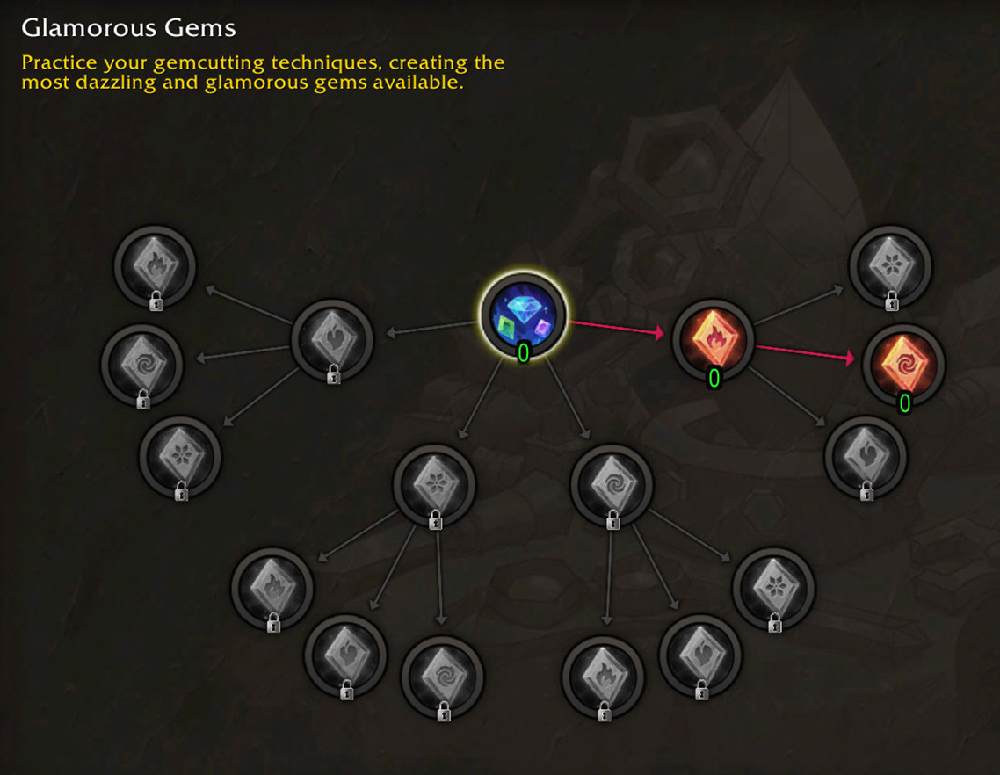
Phase 1: Multicraft (0-35 Points)
- 5 points into Thoughtful Throughput. Pick Outrageous Output.
- 30 points into Outrageous Output for maximum Multicraft.
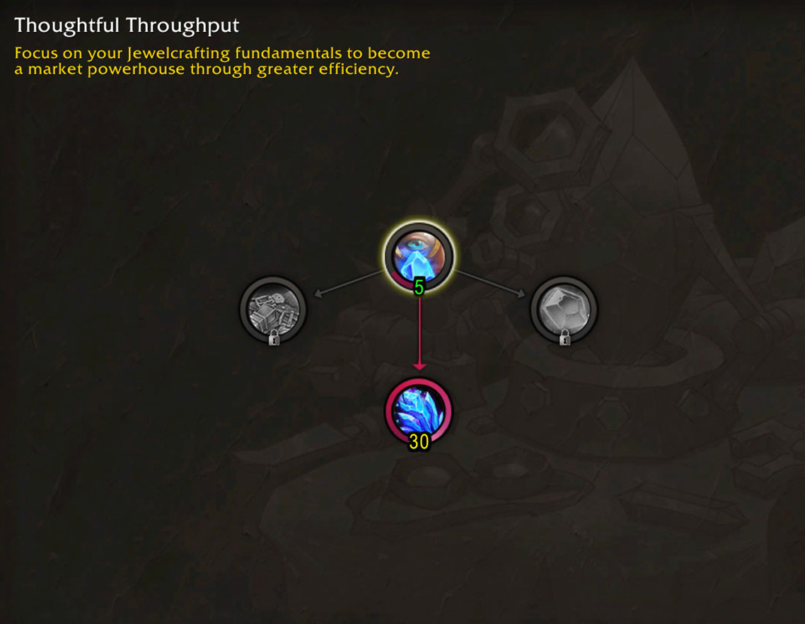
Phase 2: Choose your Path
Resourcefulness First
You get Resourcefulness early so you save more materials. You won't hit Gold quality right away, but your Silver quality crafts will cost less to make.
Gold Quality First
You rush Skill to reach Gold quality without needing Concentration. You won't have crafting stats early on, but you can craft Gold gems without spending Concentration.
Phase 2: Resourcefulness (35-75 Points)
- 10 points into Thoughtful Throughput.
- Put 30 points into Skilled Savings.
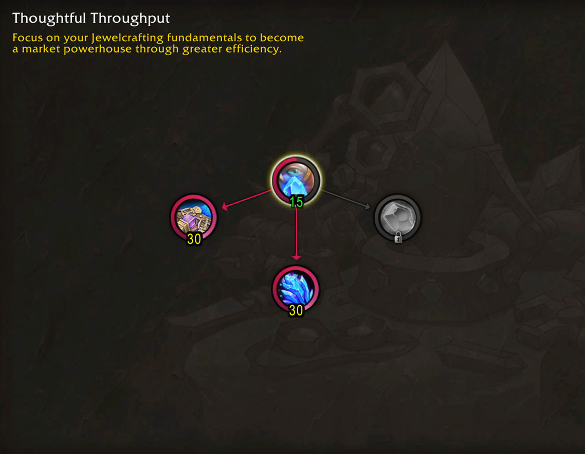
Phase 2: Get more +Skill (35-105 Points)
- Put 25 points into your color sub-spec to unlock all three gem recipes.
- 30 points into Glamorous Gems root.
- 15 points into your chosen gem.
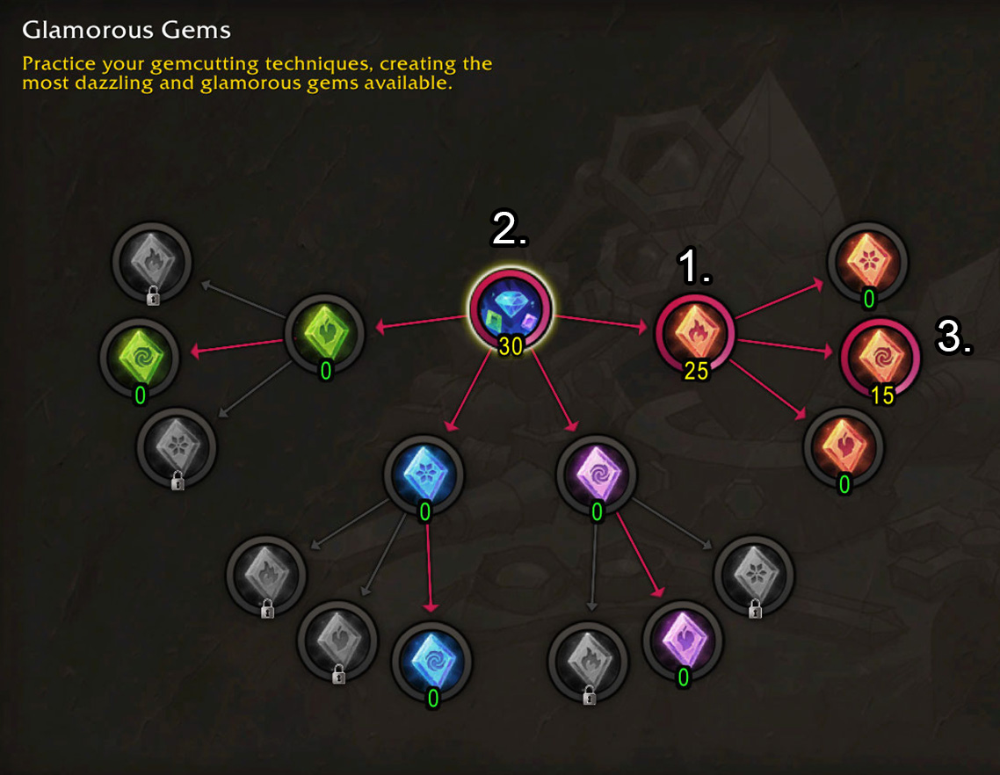
Phase 3: Finishing your build
Now if you picked Resourcefulness first, you can start putting points into your gem sub-spec to unlock the Flawless recipes and increase your Skill. If you went for Gold quality first, you can start putting points into Thoughtful Throughput for more crafting stats. Basically just complete both builds in the previous phase.
What's next?
Start working on a second gem color to expand your market. All gems work the same way, just replicate the steps you took for your first color in the second one.
Jewelry & Accessories
This build is for crafting epic rings, necklaces, and profession accessories. You can craft these for yourself or fill crafting orders for other players.
Pick Your Focus
You can specialize in rings, necklaces, or profession accessories. (the profession accessories cover JC, Enchanting, and Inscription) Profession tools sell best at launch when every crafter needs them, but demand drops off over time.
If you're not sure, pick rings or necklaces. Every class wears two rings and a necklace, so they are the safer choice.
Phase 1: Getting Skill bonus (0-70 Points)
Pick which category you want to craft first and rush to the recipe unlocks.
- 30 points into the Root node.
- Fill your chosen sub-spec to 40.
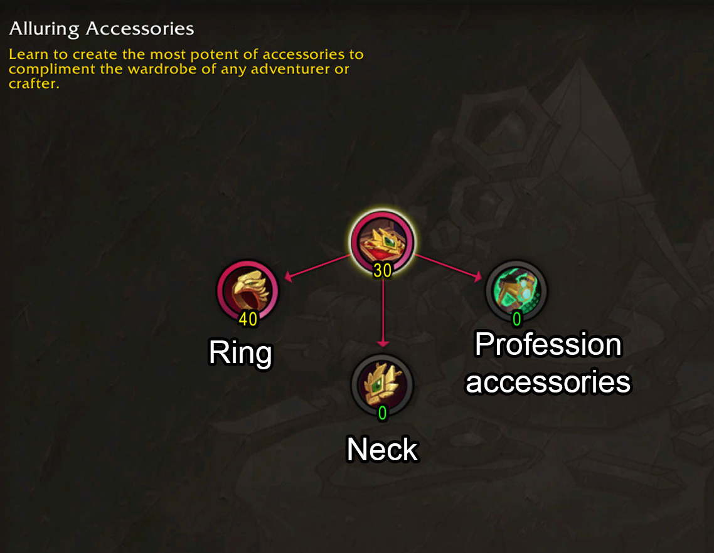
Phase 2: Second Category or Stats (70+ Points)
Option A: Second Category
Pick another sub-spec and fill it to 40. The root is already maxed, so you only need 40 more points to reach Gold quality on a second category.
Option B: Crafting Stats
Start Thoughtful Throughput and put 30 points into Skilled Savings for Resourcefulness. (Jewelry can't Multicraft, so Resourcefulness is the better stat here)
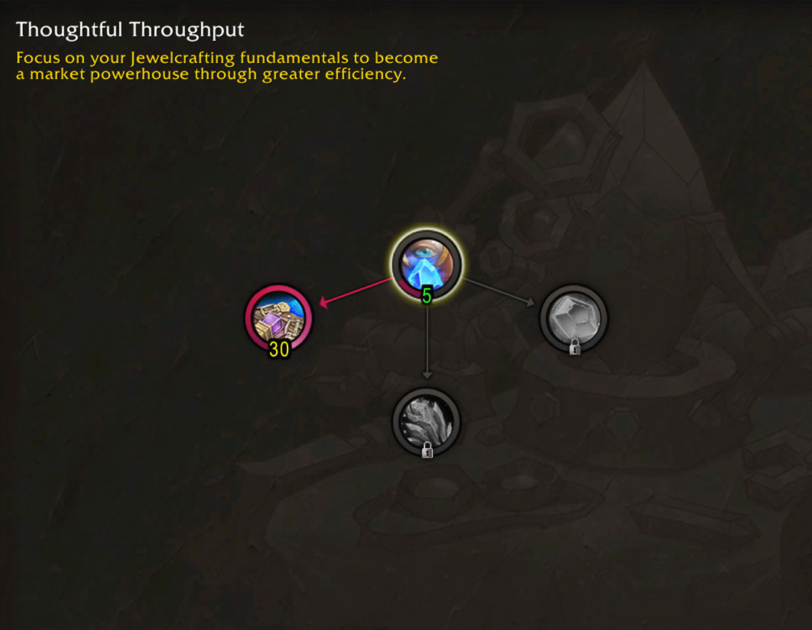
Reagent Crafter
This build is for crafting reagents to sell on the Auction House. Every JC build needs these reagents, and some of them are used by other professions too.
What You're Crafting
| Recipe | Description | Source |
|---|---|---|
| Basic Reagent | Trainer (5) | |
| Sin'dorei Lens | Basic Reagent | Trainer (10) |
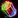 Kaleidoscopic Prism |
Basic Reagent | Trainer (40) |
| Prismatic Focusing Iris | Optional Reagent | Drop: Lothraxion (Nexus-Point Xenas) |
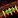 Stabilizing Gemstone Bandolier |
Optional Reagent | Drop: Heavy Trunk (Delves) |
Phase 1: Multicraft (0-35 Points)
- 5 points into Thoughtful Throughput.
- 30 points into Outrageous Output for Multicraft.
Phase 2: Choose your Path
Resourcefulness First
You get Resourcefulness first so you save more materials. You won't reach Gold quality right away, but your Silver quality reagents will be cheaper to make.
Gold Quality First
You rush Skill to craft Gold quality reagents without Concentration. You won't have crafting stats early on, but you reach Gold quality faster.
Phase 2: Resourcefulness (35-75 Points)
- 10 points into Thoughtful Throughput.
- 30 points into Skilled Savings for Resourcefulness.
Phase 2: Skill for Gold Quality (35-125 Points)
- 15 points into the root node to grab the 30 Multicraft.
- 30 points into Material Manufacturer.
- 15 points into the root node to max it out.
- 30 points into Basic Reagents or Optional reagents and max it out.
35-80 points
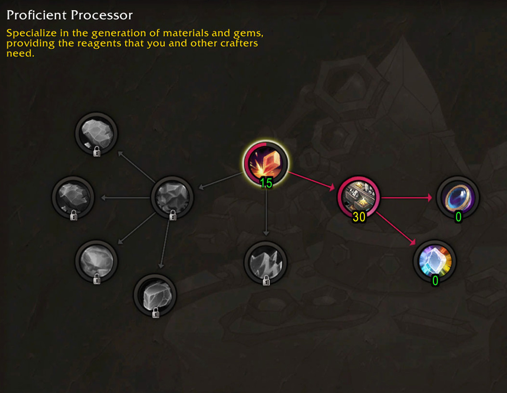
Pick your focus (80-125 points)
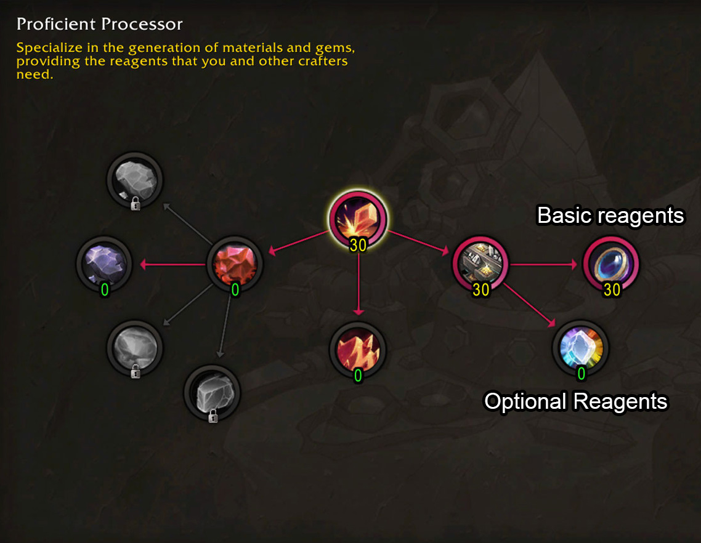
Phase 3: Finishing your build
If you picked Resourcefulness first, now you can fill the Proficient Processor tree for Gold quality. If you went Gold Quality first, get Resourcefulness from Thoughtful Throughput. Just complete whichever path you didn't pick.
Prospecting & Crushing
This build is all about processing. You prospect ore to get gems and crush gems into Gemdust. Both sell well on the AH since every Jewelcrafter needs them, and later you can expand into gemcutting or reagent crafting if you want to do more with the materials yourself.
Phase 1: Prospecting (0-30 Points)
- 10 points into Proficient Processor.
- 30 points into Prospecting Pro. The last node is very important to get here for the extra gems.
- 1 point each into the three ore types. You can probably leave out Thorium for now, it's probably not going to be worth prospecting at the start.
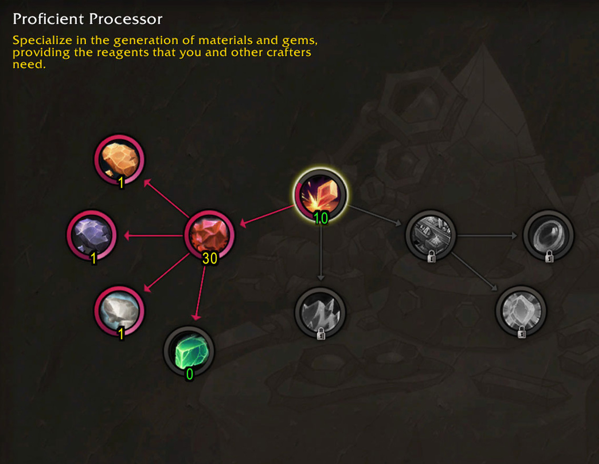
Phase 2: Resourcefulness and Skill
- 10 points into Thoughtful Throughput.
- Put 30 points into Skilled Savings.
Phase 3: Gold Quality
- 20 points into Proficient Processor.
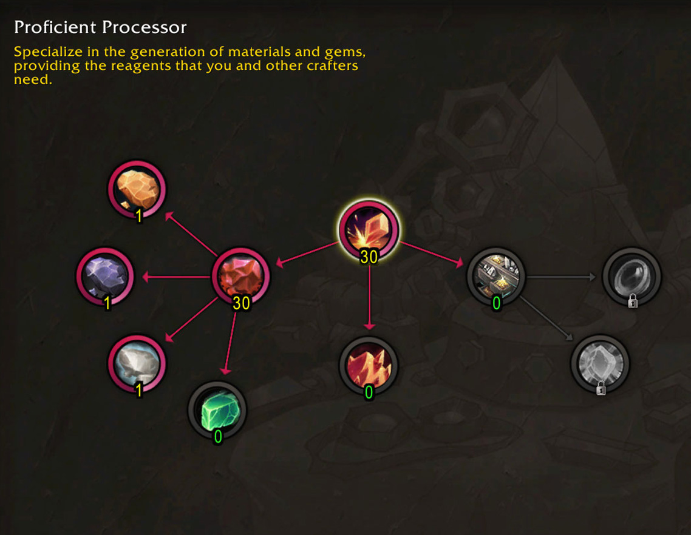
With this setup you are all set. If you get at least Blue Quality professions tools you can get guaranteed Gold Quality gems from prospecting.
Phase 1: Resourcefulness (0-35 Points)
- 10 points into Thoughtful Throughput.
- Put 30 points into Skilled Savings for Resourcefulness.
Phase 2: Crushing (35-105 Points)
Note: If you don't want to get to Gold Quality, there is actually not that much here for Crushing, you will only get an extra 10 Resourcefulness, so you could start going for Prospecting too if you are making good profit with Silver Quality gemdust.
- 10 points into Proficient Processor.
- 40 points into Crushing Connoisseur.
- 20 into Proficient Processor.
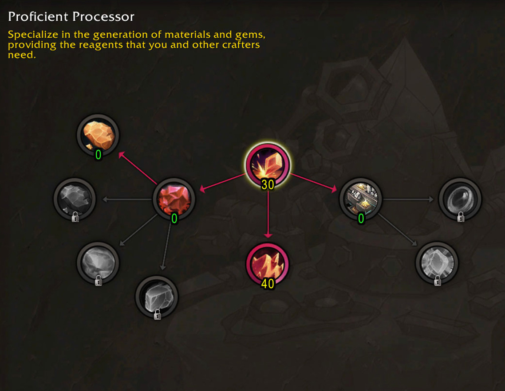
From here you can branch into Prospecting Pro if you want to prospect your own ore, or into gemcutting/reagent crafting to do more with the materials.